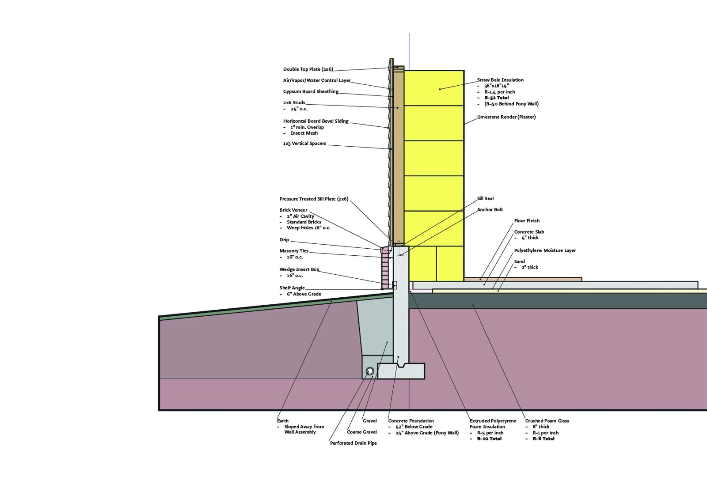

FAA 330 · University of Illinois Urbana-Champaign · 2025
3 Little Pigs Wall Assembly
A straw-bale wall assembly that ordinary builders can put up: conventional stick framing, R-52 insulation.
The story
Ever wonder why the three little pigs didn't just work together? Me too.
This wall uses all three pigs' materials: straw bale insulation, stick framing, and a brick veneer. It combines what each pig got right. Its traditional stick framing fits the way contractors already build, and its straw bale insulation reaches R-52. That means healthy, thermally comfortable rooms and big energy savings.
The project explores natural materials and what their properties can do. The point is that a natural material only spreads if it plugs into construction methods people already use.
What I did
- Researched the materials and designed the full assembly, from foundation to finish
- Drew the annotated axonometric and section in Rhino and composited them in Photoshop
Process
- Layers include a masonry water table, a stick frame and straw bale insulation (worksheet row 4)
- The drawing documents the insulation math: straw bales at 36 × 18 × 14 in and R-1.4 per inch, giving R-52 through the wall and R-40 behind the pony wall
- Designed for Champaign, Illinois (climate zone 5), with platform framing and either brick veneer or horizontal board siding
- Below grade: crushed foam glass under the slab (R-8) and extruded polystyrene at the foundation (R-10)
Outcome
- Annotated axonometric and section drawings, 8.5 × 11 in
- Straw-bale insulation value of R-52 (as documented)
Reflection
I want my work to bring joy and to be fun. Nobody thinks of play when they think of wall sections. But choosing straw bales as insulation reminded me of the children's story and made me smile, so I decided to build with all three pigs' materials.
Drawings
